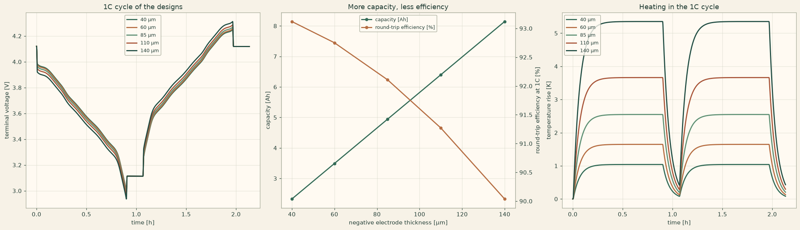

Docs › Examples › Capacity, energy and heat of lithium-ion cell designs
Electrochemistry · 0D
Capacity, energy and heat of lithium-ion cell designs
Five cell designs with negative electrodes from 40 to 140 µm, turned into capacity, open-circuit curve and resistance and run through a 1C cycle.
Run locally with OneSimulation. The example downloads are free. Running them requires an activated runtime. OneSimulation 1.0 · CPython 3.13 on macOS (Apple Silicon), Ubuntu 22.04 (x86-64), and Windows x64. Installation and activation · View pilot plans. Scope of the reference checks.


What it computes
OneSimulation derives capacity, open-circuit voltage and Newman-Tobias resistance from the layer data and runs each design as a lumped electrothermal battery with a parasitic side reaction through a 1C discharge-rest-charge cycle. The designed capacity is cross-checked with a slow discharge of the single-particle model built from the same layers.
What it checks
The single-particle model delivers 4.9453 Ah at C/20 against the designed 4.9450 Ah (+0.01 %); per cycle the energy balance of charge, discharge, heat, side reaction and stored energy closes to 4e-6 J; capacity rises from 2.33 to 8.15 Ah while the round-trip efficiency falls from 93.1 to 90.0 % and the peak temperature rise grows from 1.0 to 5.4 K.
The notebook
The complete notebook, cell by cell. Run it to produce the figures and the comparison printout.
At the design stage a cell is a stack of layers: a negative electrode of thickness \(L_-\), a separator and a positive electrode \(L_+\), wound or stacked to an electrode area \(A\). Thicker electrodes store more charge per area but have a larger internal resistance. The design rules used here:
- capacity of the limiting negative electrode, \(Q=F\,\varepsilon_{s,-}L_-c_{s,\max,-}(x_{100}-x_0)\,A\), with the positive electrode sized for a 10 % excess;
- open-circuit voltage from the two electrode curves, \(U_\mathrm{oc}(s)=U_+\big(y_{100}+(1-s)Q/C_+\big)-U_-\big(x_0+s(x_{100}-x_0)\big)\);
- area resistance from the linearised porous-electrode theory of Newman and Tobias (see the internal-resistance example) plus the separator, \(R=R_A/A\).
Each design is a lumped electrothermal cell (the model of the constant-current example): \(Q\,ds/dt=-I-I_\mathrm{par}\), \(V=U_\mathrm{oc}(s)-IR\), \(C_\mathrm{th}dT/dt=I^2R-hA_\mathrm{th}(T-T_a)\), with a parasitic side-reaction current \(I_\mathrm{par}\) that consumes charge. The load cycle is a 1C discharge from 95 % to 5 % state of charge, 10 min rest, a 1C charge back and 10 min rest.
Reference. Electrode materials, stoichiometry limits and transport data of Chen et al., J. Electrochem. Soc. 167 (2020) 080534; resistance after J. Newman and C. W. Tobias, J. Electrochem. Soc. 109 (1962) 1183. Checks: (i) a slow C/20 discharge of the single-particle model built from the same layers delivers the designed capacity; (ii) per cycle, charge energy minus discharge energy equals the generated heat plus the energy carried off by the side reaction plus the loss of stored energy, \(\Delta E=Q\int U_\mathrm{oc}\,ds\).
from dataclasses import replace
import numpy as np
from onesim.cad.geometry import LumpedDomain
from onesim.meshing import LumpedMesh
from onesim.numerics import Numerics
from onesim.numerics.discretization import LumpedParameters
from onesim.numerics.time import ClassicalRungeKutta4
from onesim.physics.chemistry import (
BatteryChemistry,
BatteryElectrodeLayer,
BatteryElectrolyteLayer,
LumpedBattery,
PorousElectrodeBattery,
)
from onesim.results.storage import MemoryOutputSink, Output
from onesim.simulation import Problem, Simulation, smooth_step
from onesim.simulation.initial_conditions import InitialValue
from onesim.visualization import plots, theme
theme.set()Materials and design rules
faraday, area, thermal = 96485.33212, 0.1, 8.314462618 * 298.15 / 96485.33212
x0, x100, y100 = 0.0279, 0.9014, 0.2661
negative_ocp = lambda x, T: (
1.9793 * np.exp(-39.3631 * x)
+ 0.2482
- 0.0909 * np.tanh(29.8538 * (x - 0.1234))
- 0.04478 * np.tanh(14.9159 * (x - 0.2769))
- 0.0205 * np.tanh(30.4444 * (x - 0.6103))
)
positive_ocp = lambda y, T: (
4.4875
- 0.8090 * y
- 0.0428 * np.tanh(18.5138 * (y - 0.5542))
- 17.7326 * np.tanh(15.7890 * (y - 0.3117))
+ 17.5842 * np.tanh(15.9308 * (y - 0.3120))
)
negative = BatteryElectrodeLayer(
thickness=85e-6,
porosity=0.25,
electrolyte_diffusivity=1.7694e-10 * 0.25**1.5,
electrolyte_conductivity=0.9487 * 0.25**1.5,
particle_radius=5.86e-6,
particle_diffusivity=3.3e-14,
active_fraction=0.75,
maximum_concentration=33133,
initial_stoichiometry=x100,
reference_exchange_current=6.48e-7 * np.sqrt(1000) * 33133 / 2,
electronic_conductivity=215,
open_circuit_potential=negative_ocp,
)
positive = BatteryElectrodeLayer(
thickness=75e-6,
porosity=0.335,
electrolyte_diffusivity=1.7694e-10 * 0.335**1.5,
electrolyte_conductivity=0.9487 * 0.335**1.5,
particle_radius=5.22e-6,
particle_diffusivity=4e-15,
active_fraction=0.665,
maximum_concentration=63104,
initial_stoichiometry=y100,
reference_exchange_current=3.42e-6 * np.sqrt(1000) * 63104 / 2,
electronic_conductivity=0.18,
open_circuit_potential=positive_ocp,
)
separator = BatteryElectrolyteLayer(
thickness=12e-6,
porosity=0.47,
electrolyte_diffusivity=1.7694e-10 * 0.47**1.5,
electrolyte_conductivity=0.9487 * 0.47**1.5,
)
charge_per_stoichiometry = (
lambda layer: faraday
* layer.active_fraction
* layer.thickness
* layer.maximum_concentration
* area
)
designs = {}
for thickness in (40e-6, 60e-6, 85e-6, 110e-6, 140e-6):
n = replace(negative, thickness=thickness)
p = replace(
positive,
thickness=1.1
* charge_per_stoichiometry(n)
* (x100 - x0)
/ (faraday * 0.665 * 63104 * area * (0.9077 - y100)),
)
designs[thickness] = dict(
negative=n, positive=p, capacity=charge_per_stoichiometry(n) * (x100 - x0)
)Resistance of the designs
The Newman-Tobias area resistance of each electrode at half filling, plus the separator.
newman_tobias = (
lambda layer: layer.thickness
/ (layer.electrolyte_conductivity + layer.electronic_conductivity)
* (
1
+ (
2
+ (
layer.electronic_conductivity / layer.electrolyte_conductivity
+ layer.electrolyte_conductivity / layer.electronic_conductivity
)
* np.cosh(
nu := layer.thickness
* np.sqrt(
3
* layer.active_fraction
/ layer.particle_radius
* layer.reference_exchange_current
/ thermal
* (
1 / layer.electrolyte_conductivity
+ 1 / layer.electronic_conductivity
)
)
)
)
/ (nu * np.sinh(nu))
)
)
for d in designs.values():
d["resistance"] = (
newman_tobias(d["negative"])
+ separator.thickness / separator.electrolyte_conductivity
+ newman_tobias(d["positive"])
) / areaLoad cycle with a parasitic reaction
The side reaction consumes 1 mA per Ah of capacity. The current ramps smoothly within 30 s at every change; the cycle is integrated with the classical Runge-Kutta method in 5 s steps.
cell = LumpedDomain()
numerics = Numerics(spatial=LumpedParameters(), time_integrator=ClassicalRungeKutta4())
for d in designs.values():
q, c_plus = d["capacity"], charge_per_stoichiometry(d["positive"])
d["ocv"] = lambda s, q=q, c_plus=c_plus: positive_ocp(
y100 + (1 - s) * q / c_plus, 0
) - negative_ocp(x0 + s * (x100 - x0), 0)
one_c, parasitic, half, ocv, resistance = (
q / 3600,
1e-3 * q / 3600,
0.9 * 3600,
d["ocv"],
d["resistance"],
)
load = (
smooth_step(0, 30)
- smooth_step(half, half + 30)
- smooth_step(half + 600, half + 630)
+ smooth_step(2 * half + 600, 2 * half + 630)
) * one_c
model = LumpedBattery(
domain=cell.system,
chemistry=BatteryChemistry(
"design",
open_circuit_voltage=lambda s, T: ocv(s),
internal_resistance=lambda s, T: resistance,
),
charge_capacity=q,
current=load,
thermal_capacity=70.0,
heat_transfer=0.3,
ambient_temperature=298.15,
effects={"internal_charge_loss": parasitic},
)
record = MemoryOutputSink()
Simulation(
problem=Problem(
name="design cycle",
geometry=cell,
physics=(model,),
initial_conditions=(
InitialValue(model.state_of_charge, 0.95),
InitialValue(model.temperature, 298.15),
),
),
mesh=LumpedMesh(cell),
numerics=numerics,
).run(
start_time=0.0,
end_time=2 * half + 1200,
time_step=5.0,
output=Output(
fields=(
model.state_of_charge,
model.terminal_voltage,
model.temperature,
model.heat_generation,
),
interval=5.0,
sink=record,
),
)
d["current"] = np.array([load(t) for t in record.times])
d["times"], d["parasitic"] = record.times, parasitic
d["soc"], d["voltage"], d["temperature"], d["heat"] = (
record.time_series(f)[1]
for f in (
model.state_of_charge,
model.terminal_voltage,
model.temperature,
model.heat_generation,
)
)Check of the designed capacity
The 85 µm design as a single-particle model, discharged at C/20 from full charge.
check = designs[85e-6]
spm = PorousElectrodeBattery(
negative=check["negative"],
separator=separator,
positive=check["positive"],
electrolyte_concentration=1000,
transference_number=0.2594,
)
slow = spm.solve(
mode="SPM",
current_density=check["capacity"] / 72000 / area,
final_time=1.02 * 72000,
radial_cells=16,
output_times=np.linspace(0, 1.02 * 72000, 2001),
)
cut = np.argmax(slow.terminal_voltage < 2.5)
delivered = (
np.interp(2.5, slow.terminal_voltage[[cut, cut - 1]], slow.times[[cut, cut - 1]])
* check["capacity"]
/ 72000
)Results
print(
f"85 µm design: designed capacity {check['capacity'] / 3600:.4f} Ah, single-particle model at C/20 to 2.5 V {delivered / 3600:.4f} Ah "
f"({100 * (delivered / check['capacity'] - 1):+.2f} %)"
)
print(
"negative positive capacity resistance 1C drop stack energy discharge charge round-trip peak energy balance"
)
print(
" [µm] [µm] [Ah] [mΩ] [mV] [Wh/L] [Wh] [Wh] efficiency ΔT [K] residual [J]"
)
for thickness, d in designs.items():
t, current = d["times"], d["current"]
power = current * d["voltage"]
out, into = np.trapezoid(np.maximum(power, 0), t), -np.trapezoid(
np.minimum(power, 0), t
)
s = np.linspace(d["soc"][-1], d["soc"][0], 2001)
stored = d["capacity"] * np.trapezoid(d["ocv"](s), s)
side = d["parasitic"] * np.trapezoid(d["ocv"](d["soc"]), t)
residual = into - out - np.trapezoid(d["heat"], t) - side + stored
volume = area * (
thickness + separator.thickness + d["positive"].thickness + 12.5e-6
)
print(
f"{1e6 * thickness:6.0f} {1e6 * d['positive'].thickness:8.1f} {d['capacity'] / 3600:8.3f} {1e3 * d['resistance']:10.2f} {d['capacity'] / 3.6 * d['resistance']:7.1f}"
f" {0.9 * d['capacity'] * np.mean(d['ocv'](np.linspace(0.05, 0.95, 401))) / 3600 / (1e3 * volume):12.0f}"
f" {out / 3600:9.3f} {into / 3600:7.3f} {100 * out / into:9.2f} % {d['temperature'].max() - 298.15:6.2f} {residual:12.2e}"
)
d.update(efficiency=out / into)
print(
f"charge consumed by the side reaction per cycle: {1e3 * designs[85e-6]['parasitic'] * designs[85e-6]['times'][-1] / 3600:.3f} mAh "
f"= {100 * designs[85e-6]['parasitic'] * designs[85e-6]['times'][-1] / designs[85e-6]['capacity']:.3f} % of the capacity"
)Figure
fig = plots.figure(1, 3, size=(19, 5.4))
plots.line(
y={
f"{1e6 * k:.0f} µm": (d["times"] / 3600, d["voltage"])
for k, d in designs.items()
},
xlabel="time [h]",
ylabel="terminal voltage [V]",
title="1C cycle of the designs",
legend="upper center",
ax=fig[0],
)
plots.line(
[1e6 * k for k in designs],
{"capacity [Ah]": [d["capacity"] / 3600 for d in designs.values()]},
right={
"round-trip efficiency [%]": [100 * d["efficiency"] for d in designs.values()]
},
markers=True,
xlabel="negative electrode thickness [µm]",
ylabel="capacity [Ah]",
right_label="round-trip efficiency at 1C [%]",
title="More capacity, less efficiency",
legend="upper center",
ax=fig[1],
)
plots.line(
y={
f"{1e6 * k:.0f} µm": (d["times"] / 3600, d["temperature"] - 298.15)
for k, d in designs.items()
},
xlabel="time [h]",
ylabel="temperature rise [K]",
title="Heating in the 1C cycle",
legend="upper left",
ax=fig[2],
)
plots.show()Going further
Add the mass of collectors, separator and electrolyte to rank the designs by Wh/kg, scan the porosity as well as the thickness, or replace the constant side-reaction current by a film-growth law as in the ageing example.